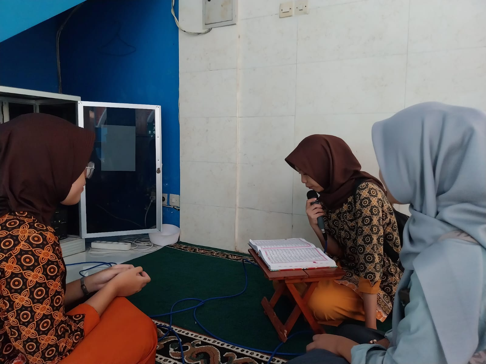

MASJID AL-KAUTSAR
- HOME
- PROFIL
- FASILITAS
- KEGIATAN
Subuh
04.05
Dzuhur
11.39
Ashar
14.54
Maghrib
17.52
Isya
19.03
MASJID
AL-KAUTSAR
KEGIATAN MASJID AL-KAUTSAR
Masjid merupakan tempat yang sangat penting bagi umat Muslim di seluruh dunia. Masjid bukan
hanya digunakan sebagai tempat untuk melakukan shalat lima waktu saja, tetapi juga sebagai
pusat kegiatan keagamaan yang lebih luas. Kegiatan keagamaan di mesjid memiliki manfaat
yang besar dalam menjaga hubungan antar komunitas. Dalam kegiatan ini, umat Islam dapat
berkumpul bersama,saling berbagi pengalaman, dan mempererat hubungan sosial mereka. Kegiatan
keagamaan di masjid juga membantu umat Islam dalam menjaga kepercayaan mereka dan menguatkan
akidah mereka. Dalam kegiatan seperti shalat berjamaah dan tadarus Al-Quran, umat dapat belajar untuk lebih fokus dalam beribadah dan meningkatkan kualitas bacaan Al-Quran mereka.

TADARUS PAGI
Kegiatan tadarus melibatkan dua orang atau
lebih. Artinya sebagian menyimak dan yang
lain membaca, dengan tujuan mempelajari
atau menjaga hafalan dengan mengulang bacaan
Al Quran.

BAKTI SOSIAL
Bakti sosial atau lebih dikenal sebagai
bansos merupakan salah satu kegiatan
wujud dari rasa kemanusiaan antara sesama
manusia. Bakti Sosial merupakan suatu
kegiatan dimana dengan adanya kegiatan ini
kita dapat merapatkan kekerabatan kita.
Bakti sosial diadakan dengan tujuan-tujuan tertentu.

RUTINAN NGAJI SORE
rutinan ngaji sore adalah kegiatan mengaji
atau belajar Al-Qur'an yang dilakukan pada
sore hari,
biasanya setelah Ashar hingga menjelang Maghrib. Kegiatan ini umumnya
dilakukan di masjid AL-KAUTSAR SMKN 1 BANYUWANGI.
<<<<<<< HEAD

BERSHOLAWAT
Dari penjelasan pengurus ponpes,
seni terbang hadrah merupakan nyanyian
Islami atau shalawat yang diiringi dengan
permainan beberapa alat musik terbang/ rebana
atau ansambel. Musik terbang hadrah merupakan
permainan musik terbang sederhana, baik pola
pukulan dari masing-masing alat musik maupun lagunya.
BERSHOLAWAT
Dari penjelasan pengurus ponpes,
seni terbang hadrah merupakan nyanyian
Islami atau shalawat yang diiringi dengan
permainan beberapa alat musik terbang/ rebana
atau ansambel. Musik terbang hadrah merupakan
permainan musik terbang sederhana, baik pola
pukulan dari masing-masing alat musik maupun lagunya.

BERSHOLAWAT
Dari penjelasan pengurus ponpes,
seni terbang hadrah merupakan nyanyian
Islami atau shalawat yang diiringi dengan
permainan beberapa alat musik terbang/ rebana
atau ansambel. Musik terbang hadrah merupakan
permainan musik terbang sederhana, baik pola
pukulan dari masing-masing alat musik maupun lagunya.
=======
>>>>>>> 260bf4d921faf3eafae6155b24ded37c18eba10d